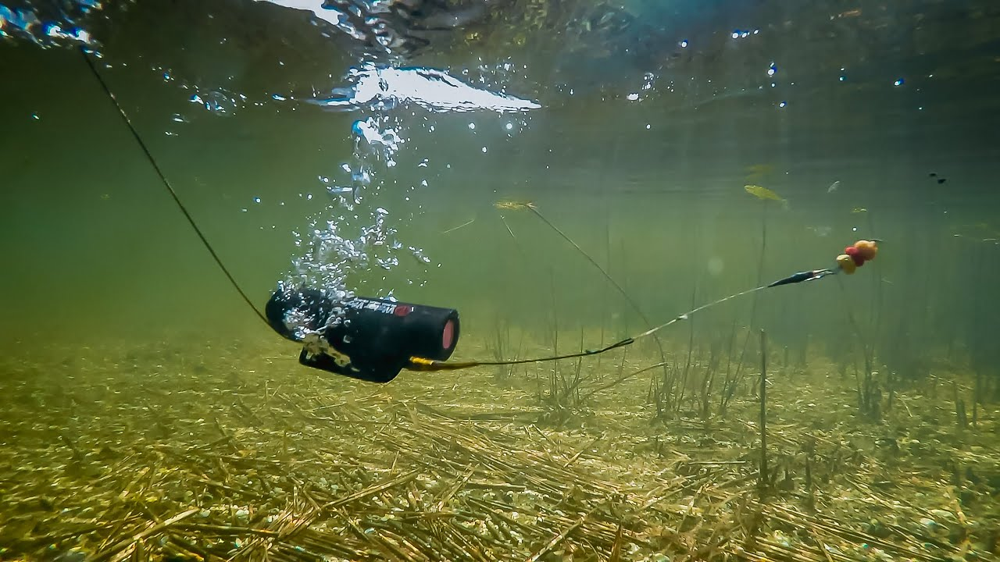

Water Wolf Camera
Last Updated - 5 Days Ago

What's the Water Wolf Camera?
Launched to the manner fish respond and act with their baits and lures, the Water Wolf Camera was!
After attempting cameras for at least a year, they understood a camera that was much better was required. Because of this, the team built their own camera.
The camera engineered from the Team Watertight extended battery lifetime simple operation light sensitivity could be cast or trolled
Impressed with the Water Wolf Camera, the COAF Field Team bought a camera, and it has combined in Water Wolf's"pursuit to research and discuss the wonderful stuff that goes on under the surface..." (Retrieved from www.waterwolfhd.com)
Why did we get you?
As we fished them, we bought a Water Wolf Camera to find out what's been happening to our own baits and lures. We'd come away with no snack although many times we've fished a place where we understood lurked.
We have observed turtles sneaking our lure and fish such as Sunfish and Bluegill select clean our hooks. We have seen when fishing within our ponds fish seem and turn away from baits.
In addition, we have discovered Bass and Catfish attack after fall our lure. Fascinating to see, is when a fish gets many efforts before getting hooked to take our lure.
The Water Wolf Camera has completed its job, giving us of exactly what occurred to our baits as they sat waiting for a fish video.
Next step is the camera to try out whilst trolling lures within our lakes for Stripers and White Bass. More importantly in the future!
Working with the Camera
By the maker submitted From the sidebar which particulars editing and recording video. For more information on the Water Wolf Camera, check out the User Guide.
The best way to record your initial video
This video offers information. The movie reveals the camera being cast by a fisherman it, and striking the bait|a fisherman regaining it casting the camera, and striking the bait|a fisherman casting the camera it, and striking at the bait.
Notice the rig is a line connector plus there is a lure used. Line fouling when utilizing lighter baits is reduced by the line connector. Check it out from the Altered Line Connector segment below.
The Way To Cut And Share Your Very First Video
This video details how to transfer video edit your audio then sharing your own video. We enjoy the step information for recording video clips and shooting image snapshots. We advise using VLC to edit your audio, then converting the movie into a format that's compatible to your editing program. Notice: We convert our movie clips from MOV to MP4 with VLC, then we finish our final video edits with PowerDirector. We place online to YouTube with the manufacturer work when completed.
Suggestion and Tips
The sections below are some for utilizing the Water Wolf Camera hints and strategies. The emphasis is really on casting and lure fishing;hints and the hints are a work in progress. We aspire to provide strategies and hints when we've field tested the camera at least 2 of our lakes for trolling. Do check back for updates!
Field evaluation of this Water Wolf Camera with a prototype modification explained in the video. We have embraced the Modified Line Connector although is that the alteration reduced line fouling. PS: Do notice that the Bass.
Casting When utilizing light baits and fishing baits, the line will foul with the metallic connector pin in which you join the line. We attempted several modifications to decrease fouling before deciding the one recorded below (see Modified Line Connector segment ). We enjoyed this modification because it functions nicely casting in addition to lure fishing, and we expect it nicely do the job nicely for trolling. When utilizing heavier baits and the connector pinwe implemented dental floss to coated the floss with Tough As Nails Polish to pay the trap and reduce fouling together with our lineup.
Bait - Bread
Bait - Live Bluegill
Bait Fishing
There's a bottom fishing rig offered by Water Wolf; nonetheless, we haven't found any accessible in our region. The rig seems promising allowing on the floor once to get a weight along with an camera place.
Utilizing stuff we had available for alterations created for casting, we discovered it functioned well for lure fishing, also! When fishing around the floor, we utilize the 6 g brass weight as it gradually sinks to the ground and stays level once at the floor. When fishing with live bait, then we utilize the 6 g or the 9 g weight, insert the float which accompanies the camera, use a bead and then slide bobber knot to adjust the thickness of this camera/live bait rig.
Trolling
Stay tuned for more about hints and suggestions for trolling. Whilst trolling baits our lakes, we expect to try out the camera. One pond has reduced visibility and yet another has obvious water. We intend to check the camera on post ends and lakes. PS: See sidebar for movie footage whilst trolling the very low visibility lake.
Posted by John Skinner - writer and avid sailors, that reveals outstanding underwater action movie of bass responding to his lures and baits! Video clearly reveals the capability of this Water Wolf Camera while trolling! PS: Do take a look at his publication Striper Pursuit: Surf Fishing Beyond the Fundamentals.
Other Tips
Before deploying the camera, be certain that the camera cap is sealed. If able, use a steel pin the cap shut. A steel camera and pin is given by Water Wolf Camera.
The steel trap we utilized is envisioned in the sidebar. It's a bathroom key used to start a toilet door that is residential. Make certain to look at the crimson light occasionally while fishing. A red light ought to be found via the camera cap. In case you don't find the red light or you also find a continuous red light, eliminate the camera cap and then turn off the camera. Wait a few seconds, turn it on again.
When a blinking red light doesn't show after 5 minutes, then turn the camera off, then remove and then reinsert the MicroSD Card.Try turning it on again.
When the blinking red light doesn't show after 5 minutes, once you return home attempt shredding the camera. Contact the maker, In case the problem isn't solved.
Be careful to not throw the camera farther than the producer 's recommendation because the camera may be ruined.
Use powerful braided fishing line to attach your camera. Use a weight test leader to operate into the bait or lure out of your camera. The line becomes snagged, you'll lose lure/bait and your boss rather than your camera!
If water vulnerability is reduced, make certain to reevaluate your leader consequently. The leader that is advised is 40-60cm; however significantly less than 40cm has become the standard from the ponds.
Altered Line Connector
The Modified Line Connector can be used Instead of the producer 's Line Connector. It reduces fouling of the fishing line. You can convert back into the initial layout in order. Below are details about the best way best to create the Modified Line Connector.
NoteWe recommend buying another Line proceeding with this alteration among the collars of this maker 's Line Connector is going to be utilized and will need cutting the steel snare.
Materials The next is the substance list for your Modified Line Connector: Collar from producer 's Line Connector - refer to components 4a and 4b from the diagram that constitute one part. 1 foot of 120 pounds evaluation Nylon Coated Wire Leader and Crimp Sleeves 1 Plastic Bead Poly Tube utilized for creating tubing fishing flies (HMH Product Number 900100) 1 Barrel Swivel 1 Barrel Swivel with Snap Electrical Tape
Eliminate Collar First remove the collar s Line Connector as follows before beginning on the alteration: Push the steel trap so that the eye extends beyond the toaster Using wire cutters, cut the steel pin as indicated in the diagram at the faucet Once cut, then slide the Collar off the steel pin
Measures 1 - 8 Proceed with the Actions listed below, after eliminating the toaster: Step 1: Attach the Barrel Swivel into the Nylon Coated Wire Leader with two Crimp Sleeves. Measure 2: Switch to a Plastic Bead.
Step 3: Cut a 1-5/8" segment of Poly Tube, then slide onto the Poly Tube. Step 4: Cut a 1-1/4" segment of Poly Tube, the Poly Tube in the back of the camera to the Line Connector groove. Step 5: Then, insert the toaster in the front of the camera to the Line Connector groove. Slip the Leader via Collar and the Poly Tube. Step 6: Cut a 2-7/8" Poly Tube and slip it on to the Leader. Step 7: Attach the Barrel Swivel Snap into the Leader with one Crimp Sleeve. Note: Prior to crimping the sleeve, thread the surplus Leader back to the Poly Tube.
Measure 8: Using 2 wraps of tape at every point displayed in the image below, fasten the Collar and Poly Tube which has been inserted at the Line Connector Groove.
Notice: Before using the camera, be sure that the crimp sleeves are crimped correctly and doesn't slide under pressure. Water Wolf Camera!
Struck outside but great to find out what occurred u/w!
Trout excursion where we use the camera close of movie.
Action shots while fishing a pond.
Struck out but did capture video of bass... including a departure gar!
Scouting a neighborhood pond
PS: Great UW Video of Trout Maintaining Our Bait...
Leave a Comment:
Search
Advertisement